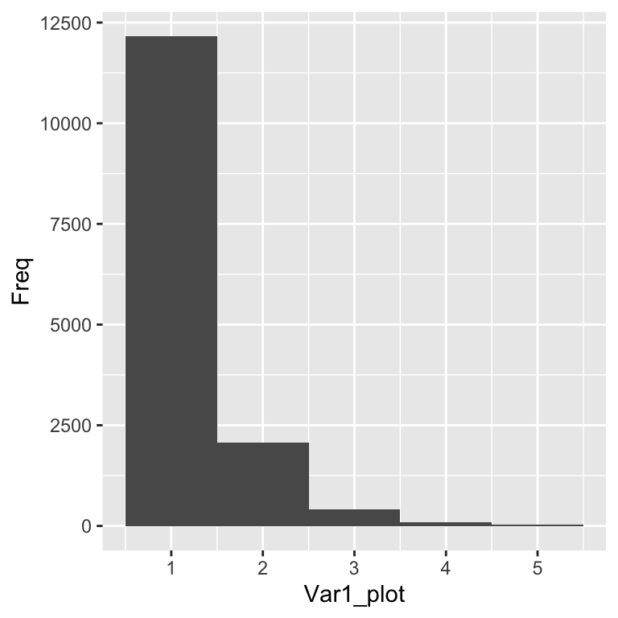
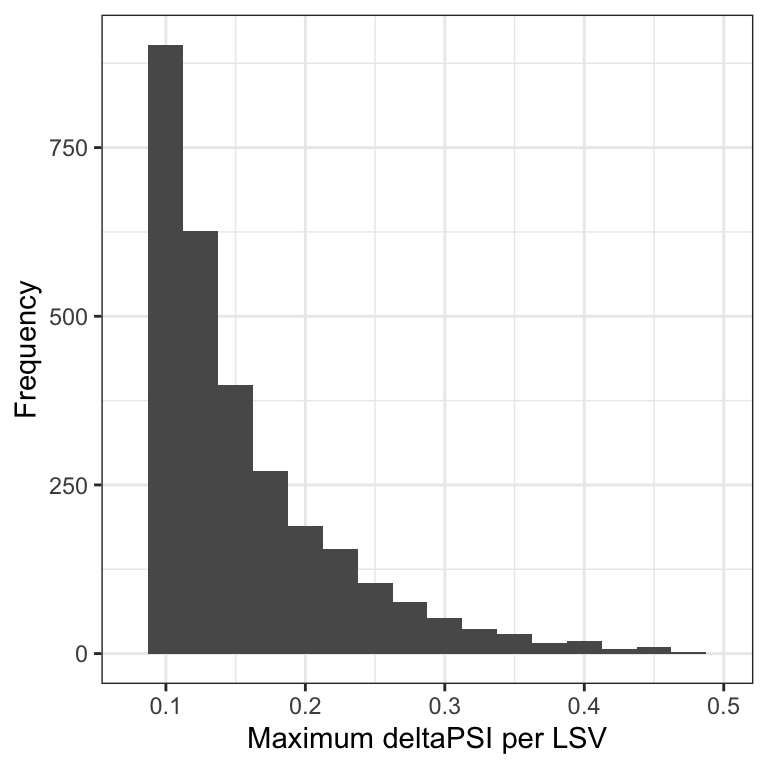
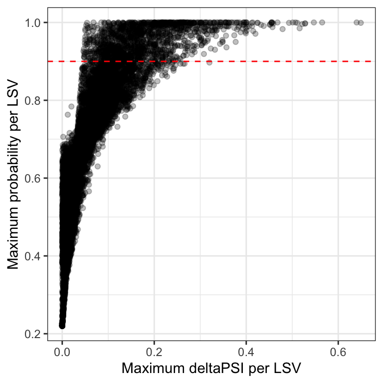

library(dplyr) # to easily handle data.frames
library(knitr) # beautiful tables
library(ggplot2) # nice plots
library(ggpubr) # for even more nice plotsGlobal characterisation of detected splice events
Introduction
A splicing analysis of your RNA-seq data has been preformed with the MAJIQ workflow.
The output is split by the splicing classes and stored in .tsv files.
This script only looks at one of the two data sets you have (e.g. only one cell line). You should therefore perform the analyses twice, once for each data set.
Preparation
Required packages
Here you can find the packages we need. You can install them with the install.packages() command.
Loading the TSV-Files
First, we load the TSV-files as data.frames into R. We are only look at the most common classes of splicing. You can see in the output folder, that you get much more TSV-files, but we will ignore all others.
# --------------------
# Input
# --------------------
# path to the folder that contains the .tsv files
in_path <- "/Users/melinaklostermann/Documents/projects/students/majiq-course/spezi_scripts_website/example_data/modulise/SFPQ_HepG2_Control-SFPQ_HepG2_shRNA/"
# These are the splicing classes we want to look at.
# We make a list with the file names, and give each object in the list a name
# the syntax is object_name = "file_name.tsv"
interesting_classes <- list(alternative_3_prime_splice_site = "alt3prime.tsv",
alternative_5_prime_splice_site = "alt5prime.tsv",
cassette_exons = "cassette.tsv",
alternative_first_exon = "alternate_first_exon.tsv",
alternative_last_exon = "alternate_last_exon.tsv",
mutually_exclusive_exons = "mutually_exclusive.tsv",
intron_retention ="alternative_intron.tsv")
interesting_classes $alternative_3_prime_splice_site
[1] "alt3prime.tsv"
$alternative_5_prime_splice_site
[1] "alt5prime.tsv"
$cassette_exons
[1] "cassette.tsv"
$alternative_first_exon
[1] "alternate_first_exon.tsv"
$alternative_last_exon
[1] "alternate_last_exon.tsv"
$mutually_exclusive_exons
[1] "mutually_exclusive.tsv"
$intron_retention
[1] "alternative_intron.tsv"# --------------------
# Import tsvs
# --------------------
# load the content of the tsv files by looping over the interesting_classes list
splice_results_list <- interesting_classes
# read in the tsv files with a loop over all tsv files
for(i in 1:length(interesting_classes)){
# we use the read_table function to import the tsv files
splice_results_list [[i]] = read.table(paste0(in_path, interesting_classes[[i]]),
header=TRUE,
sep="\t",
stringsAsFactors=FALSE)
}
# the tsv files are now imported in the splice_results list
# each object in the splice_results list are the results of one class of splicing (in data.frame format)# --------------------
# have a closer look at the loop from above
# --------------------
length(interesting_classes) # the length of the list interesting_classes[1] 71:length(interesting_classes) # a vector from one until the length of the interesting_classes list[1] 1 2 3 4 5 6 7interesting_classes[[3]] %>% kable() # the third object in the interesting classes results list| x |
|---|
| cassette.tsv |
paste0(in_path, interesting_classes[[3]]) # the path to the third tsv file[1] "/Users/melinaklostermann/Documents/projects/students/majiq-course/spezi_scripts_website/example_data/modulise/SFPQ_HepG2_Control-SFPQ_HepG2_shRNA/cassette.tsv"head(splice_results_list[[3]]) %>% kable() # the third object in the splice results list| module_id | gene_id | gene_name | seqid | strand | lsv_id | event_id | complex | denovo | reference_exon_coord | spliced_with | spliced_with_coord | junction_name | junction_coord | event_size | event_non_changing | event_changing | junction_changing | SFPQ_HepG2_Control_median_psi | SFPQ_HepG2_shRNA_median_psi | SFPQ_HepG2_shRNA.SFPQ_HepG2_Control_median_dpsi | SFPQ_HepG2_shRNA.SFPQ_HepG2_Control_probability_changing | SFPQ_HepG2_shRNA.SFPQ_HepG2_Control_probability_non_changing |
|---|---|---|---|---|---|---|---|---|---|---|---|---|---|---|---|---|---|---|---|---|---|---|
| ENSG00000122557.11_1 | ENSG00000122557.11 | HERPUD2 | chr7 | - | ENSG00000122557.11:s:35694184-35694627 | ENSG00000122557.11_1_CE_1 | True | False | 35694184-35694627 | C2 | 35670215-35670328 | C1_C2 | 35670328-35694184 | 78 | False | False | False | 0.080 | 0.055 | -0.015 | 0.486 | 0.212 |
| ENSG00000122557.11_1 | ENSG00000122557.11 | HERPUD2 | chr7 | - | ENSG00000122557.11:s:35694184-35694627 | ENSG00000122557.11_1_CE_1 | True | False | 35694184-35694627 | A | 35673201-35673278 | C1_A | 35673278-35694184 | 78 | False | False | False | 0.862 | 0.934 | 0.050 | 0.644 | 0.079 |
| ENSG00000122557.11_1 | ENSG00000122557.11 | HERPUD2 | chr7 | - | ENSG00000122557.11:t:35670215-35670328 | ENSG00000122557.11_1_CE_1 | True | False | 35670215-35670328 | C1 | 35694184-35694627 | C2_C1 | 35670328-35694184 | 78 | False | False | False | 0.026 | 0.032 | 0.002 | 0.280 | 0.586 |
| ENSG00000122557.11_1 | ENSG00000122557.11 | HERPUD2 | chr7 | - | ENSG00000122557.11:t:35670215-35670328 | ENSG00000122557.11_1_CE_1 | True | False | 35670215-35670328 | A | 35673201-35673278 | C2_A | 35670328-35673201 | 78 | False | False | False | 0.974 | 0.968 | -0.002 | 0.280 | 0.586 |
| ENSG00000011426.11_1 | ENSG00000011426.11 | ANLN | chr7 | + | ENSG00000011426.11:s:36415758-36415885 | ENSG00000011426.11_1_CE_1 | False | False | 36415758-36415884 | C2 | 36419244-36419479 | C1_C2 | 36415884-36419244 | 111 | False | False | False | 0.237 | 0.163 | -0.052 | 0.707 | 0.067 |
| ENSG00000011426.11_1 | ENSG00000011426.11 | ANLN | chr7 | + | ENSG00000011426.11:s:36415758-36415885 | ENSG00000011426.11_1_CE_1 | False | False | 36415758-36415884 | A | 36417080-36417190 | C1_A | 36415884-36417080 | 111 | False | False | False | 0.763 | 0.837 | 0.052 | 0.707 | 0.067 |
Cleaning up the splicing results for easier usage
We combine the data.frames in the list into one data.frame for easier handling.
Add a class column
# --------------------
# combine all data frames in the list into one data.frame
# --------------------
# You can select a object from the list by its name
head(splice_results_list$alternative_3_prime_splice_site) %>% kable()| module_id | gene_id | gene_name | seqid | strand | lsv_id | event_id | complex | denovo | reference_exon_coord | spliced_with | spliced_with_coord | junction_name | junction_coord | event_size | event_non_changing | event_changing | junction_changing | SFPQ_HepG2_Control_median_psi | SFPQ_HepG2_shRNA_median_psi | SFPQ_HepG2_shRNA.SFPQ_HepG2_Control_median_dpsi | SFPQ_HepG2_shRNA.SFPQ_HepG2_Control_probability_changing | SFPQ_HepG2_shRNA.SFPQ_HepG2_Control_probability_non_changing |
|---|---|---|---|---|---|---|---|---|---|---|---|---|---|---|---|---|---|---|---|---|---|---|
| ENSG00000159685.11_1 | ENSG00000159685.11 | CHCHD6 | chr3 | + | ENSG00000159685.11:s:126733078-126733222 | ENSG00000159685.11_1_A3_1 | False | False | 126733078-126733222 | E2 | 126852644-126852730 | Proximal | 126733222-126852644 | 3 | False | False | False | 0.046 | 0.056 | 0.007 | 0.435 | 0.283 |
| ENSG00000159685.11_1 | ENSG00000159685.11 | CHCHD6 | chr3 | + | ENSG00000159685.11:s:126733078-126733222 | ENSG00000159685.11_1_A3_1 | False | False | 126733078-126733222 | E2 | 126852644-126852730 | Distal | 126733222-126852647 | 3 | False | False | False | 0.950 | 0.940 | -0.007 | 0.445 | 0.270 |
| ENSG00000197841.15_1 | ENSG00000197841.15 | ZNF181 | chr19 | + | ENSG00000197841.15:s:34739148-34739268 | ENSG00000197841.15_1_A3_1 | False | False | 34739148-34739268 | E2 | 34739523-34739621 | Proximal | 34739268-34739523 | 3 | False | False | False | 0.446 | 0.451 | 0.011 | 0.625 | 0.079 |
| ENSG00000197841.15_1 | ENSG00000197841.15 | ZNF181 | chr19 | + | ENSG00000197841.15:s:34739148-34739268 | ENSG00000197841.15_1_A3_1 | False | False | 34739148-34739268 | E2 | 34739523-34739621 | Distal | 34739268-34739526 | 3 | False | False | False | 0.554 | 0.549 | -0.011 | 0.625 | 0.079 |
| ENSG00000076685.19_4 | ENSG00000076685.19 | NT5C2 | chr10 | - | ENSG00000076685.19:s:103101045-103101102 | ENSG00000076685.19_4_A3_1 | True | False | 103101045-103101102 | E2 | 103100752-103100964 | Proximal | 103100964-103101045 | 21 | False | False | False | 0.029 | 0.059 | 0.017 | 0.505 | 0.223 |
| ENSG00000076685.19_4 | ENSG00000076685.19 | NT5C2 | chr10 | - | ENSG00000076685.19:s:103101045-103101102 | ENSG00000076685.19_4_A3_1 | True | False | 103101045-103101102 | E2 | 103100752-103100964 | Distal | 103100943-103101045 | 21 | False | False | False | 0.079 | 0.148 | 0.040 | 0.645 | 0.096 |
# Add a new column with the class name
#####################################
# now you can add a new column to the object that has the object name
splice_results_list$alternative_3_prime_splice_site <- mutate(splice_results_list$alternative_3_prime_splice_site,
class = "alternative_3_prime_splice_site")
head(splice_results_list$alternative_3_prime_splice_site) %>% kable()| module_id | gene_id | gene_name | seqid | strand | lsv_id | event_id | complex | denovo | reference_exon_coord | spliced_with | spliced_with_coord | junction_name | junction_coord | event_size | event_non_changing | event_changing | junction_changing | SFPQ_HepG2_Control_median_psi | SFPQ_HepG2_shRNA_median_psi | SFPQ_HepG2_shRNA.SFPQ_HepG2_Control_median_dpsi | SFPQ_HepG2_shRNA.SFPQ_HepG2_Control_probability_changing | SFPQ_HepG2_shRNA.SFPQ_HepG2_Control_probability_non_changing | class |
|---|---|---|---|---|---|---|---|---|---|---|---|---|---|---|---|---|---|---|---|---|---|---|---|
| ENSG00000159685.11_1 | ENSG00000159685.11 | CHCHD6 | chr3 | + | ENSG00000159685.11:s:126733078-126733222 | ENSG00000159685.11_1_A3_1 | False | False | 126733078-126733222 | E2 | 126852644-126852730 | Proximal | 126733222-126852644 | 3 | False | False | False | 0.046 | 0.056 | 0.007 | 0.435 | 0.283 | alternative_3_prime_splice_site |
| ENSG00000159685.11_1 | ENSG00000159685.11 | CHCHD6 | chr3 | + | ENSG00000159685.11:s:126733078-126733222 | ENSG00000159685.11_1_A3_1 | False | False | 126733078-126733222 | E2 | 126852644-126852730 | Distal | 126733222-126852647 | 3 | False | False | False | 0.950 | 0.940 | -0.007 | 0.445 | 0.270 | alternative_3_prime_splice_site |
| ENSG00000197841.15_1 | ENSG00000197841.15 | ZNF181 | chr19 | + | ENSG00000197841.15:s:34739148-34739268 | ENSG00000197841.15_1_A3_1 | False | False | 34739148-34739268 | E2 | 34739523-34739621 | Proximal | 34739268-34739523 | 3 | False | False | False | 0.446 | 0.451 | 0.011 | 0.625 | 0.079 | alternative_3_prime_splice_site |
| ENSG00000197841.15_1 | ENSG00000197841.15 | ZNF181 | chr19 | + | ENSG00000197841.15:s:34739148-34739268 | ENSG00000197841.15_1_A3_1 | False | False | 34739148-34739268 | E2 | 34739523-34739621 | Distal | 34739268-34739526 | 3 | False | False | False | 0.554 | 0.549 | -0.011 | 0.625 | 0.079 | alternative_3_prime_splice_site |
| ENSG00000076685.19_4 | ENSG00000076685.19 | NT5C2 | chr10 | - | ENSG00000076685.19:s:103101045-103101102 | ENSG00000076685.19_4_A3_1 | True | False | 103101045-103101102 | E2 | 103100752-103100964 | Proximal | 103100964-103101045 | 21 | False | False | False | 0.029 | 0.059 | 0.017 | 0.505 | 0.223 | alternative_3_prime_splice_site |
| ENSG00000076685.19_4 | ENSG00000076685.19 | NT5C2 | chr10 | - | ENSG00000076685.19:s:103101045-103101102 | ENSG00000076685.19_4_A3_1 | True | False | 103101045-103101102 | E2 | 103100752-103100964 | Distal | 103100943-103101045 | 21 | False | False | False | 0.079 | 0.148 | 0.040 | 0.645 | 0.096 | alternative_3_prime_splice_site |
# do the same for all classes
splice_results_list$alternative_5_prime_splice_site <- mutate(splice_results_list$alternative_5_prime_splice_site,
class = "alternative_5_prime_splice_site")
splice_results_list$cassette_exons <- mutate(splice_results_list$cassette_exons,
class = "cassette_exons")
splice_results_list$alternative_first_exon <- mutate(splice_results_list$alternative_first_exon,
class = "alternative_first_exon")
splice_results_list$alternative_last_exon <- mutate(splice_results_list$alternative_last_exon,
class = "alternative_last_exon")
splice_results_list$mutually_exclusive_exons <- mutate(splice_results_list$mutually_exclusive_exons ,
class = "mutually_exclusive_exons")
splice_results_list$intron_retention <- mutate(splice_results_list$intron_retention,
class = "intron_retention")Select only the most important columns
We select the following columns:
- Name of the gene in which the LSV is located
- Chromosome where the gene is located
- Strand of the gene
- Unique ID of the LSV
- PSI of the control samples (median of all samples)
- PSI of the condition samples (median of all samples, condition is for example knockout or knockdown)
- deltaPSI of condition vs control
- Probability that the change (|deltaPSI|) was \(\ge\) 0.05 (change of 5% or more)
- class of splicing event
# select important columns
##########################
colnames(splice_results_list$alternative_3_prime_splice_site) [1] "module_id"
[2] "gene_id"
[3] "gene_name"
[4] "seqid"
[5] "strand"
[6] "lsv_id"
[7] "event_id"
[8] "complex"
[9] "denovo"
[10] "reference_exon_coord"
[11] "spliced_with"
[12] "spliced_with_coord"
[13] "junction_name"
[14] "junction_coord"
[15] "event_size"
[16] "event_non_changing"
[17] "event_changing"
[18] "junction_changing"
[19] "SFPQ_HepG2_Control_median_psi"
[20] "SFPQ_HepG2_shRNA_median_psi"
[21] "SFPQ_HepG2_shRNA.SFPQ_HepG2_Control_median_dpsi"
[22] "SFPQ_HepG2_shRNA.SFPQ_HepG2_Control_probability_changing"
[23] "SFPQ_HepG2_shRNA.SFPQ_HepG2_Control_probability_non_changing"
[24] "class" cols <- c("gene_name",
"seqid",
"strand",
"lsv_id",
"complex",
"junction_coord",
"SFPQ_HepG2_Control_median_psi",
"SFPQ_HepG2_shRNA_median_psi",
"SFPQ_HepG2_shRNA.SFPQ_HepG2_Control_median_dpsi",
"SFPQ_HepG2_shRNA.SFPQ_HepG2_Control_probability_changing",
"class")In order to do that to all objects in the list (all splicing classes), we use a for loop again.
for(i in 1:length(splice_results_list)){
print(names(splice_results_list[i]))
splice_results_list[[i]] = select(splice_results_list[[i]], cols)
}[1] "alternative_3_prime_splice_site"
[1] "alternative_5_prime_splice_site"
[1] "cassette_exons"
[1] "alternative_first_exon"
[1] "alternative_last_exon"
[1] "mutually_exclusive_exons"
[1] "intron_retention"Make one data.frame combining all classes
# Combine all
splice_results <- rbind(splice_results_list$alternative_3_prime_splice_site,
splice_results_list$alternative_5_prime_splice_site,
splice_results_list$cassette_exons,
splice_results_list$alternative_first_exon,
splice_results_list$alternative_last_exon,
splice_results_list$mutually_exclusive_exons,
splice_results_list$intron_retention)
head(splice_results) %>% kable()| gene_name | seqid | strand | lsv_id | complex | junction_coord | SFPQ_HepG2_Control_median_psi | SFPQ_HepG2_shRNA_median_psi | SFPQ_HepG2_shRNA.SFPQ_HepG2_Control_median_dpsi | SFPQ_HepG2_shRNA.SFPQ_HepG2_Control_probability_changing | class |
|---|---|---|---|---|---|---|---|---|---|---|
| CHCHD6 | chr3 | + | ENSG00000159685.11:s:126733078-126733222 | False | 126733222-126852644 | 0.046 | 0.056 | 0.007 | 0.435 | alternative_3_prime_splice_site |
| CHCHD6 | chr3 | + | ENSG00000159685.11:s:126733078-126733222 | False | 126733222-126852647 | 0.950 | 0.940 | -0.007 | 0.445 | alternative_3_prime_splice_site |
| ZNF181 | chr19 | + | ENSG00000197841.15:s:34739148-34739268 | False | 34739268-34739523 | 0.446 | 0.451 | 0.011 | 0.625 | alternative_3_prime_splice_site |
| ZNF181 | chr19 | + | ENSG00000197841.15:s:34739148-34739268 | False | 34739268-34739526 | 0.554 | 0.549 | -0.011 | 0.625 | alternative_3_prime_splice_site |
| NT5C2 | chr10 | - | ENSG00000076685.19:s:103101045-103101102 | True | 103100964-103101045 | 0.029 | 0.059 | 0.017 | 0.505 | alternative_3_prime_splice_site |
| NT5C2 | chr10 | - | ENSG00000076685.19:s:103101045-103101102 | True | 103100943-103101045 | 0.079 | 0.148 | 0.040 | 0.645 | alternative_3_prime_splice_site |
splice_results %>% subset(lsv_id == "ENSG00000076685.19:s:103101045-103101102") %>% kable()| gene_name | seqid | strand | lsv_id | complex | junction_coord | SFPQ_HepG2_Control_median_psi | SFPQ_HepG2_shRNA_median_psi | SFPQ_HepG2_shRNA.SFPQ_HepG2_Control_median_dpsi | SFPQ_HepG2_shRNA.SFPQ_HepG2_Control_probability_changing | class | |
|---|---|---|---|---|---|---|---|---|---|---|---|
| 5 | NT5C2 | chr10 | - | ENSG00000076685.19:s:103101045-103101102 | True | 103100964-103101045 | 0.029 | 0.059 | 0.017 | 0.505 | alternative_3_prime_splice_site |
| 6 | NT5C2 | chr10 | - | ENSG00000076685.19:s:103101045-103101102 | True | 103100943-103101045 | 0.079 | 0.148 | 0.040 | 0.645 | alternative_3_prime_splice_site |
| 12423 | NT5C2 | chr10 | - | ENSG00000076685.19:s:103101045-103101102 | True | 103100019-103101045 | 0.877 | 0.790 | -0.070 | 0.756 | cassette_exons |
| 12424 | NT5C2 | chr10 | - | ENSG00000076685.19:s:103101045-103101102 | True | 103100943-103101045 | 0.079 | 0.148 | 0.040 | 0.645 | cassette_exons |
| 12427 | NT5C2 | chr10 | - | ENSG00000076685.19:s:103101045-103101102 | True | 103100019-103101045 | 0.877 | 0.790 | -0.070 | 0.756 | cassette_exons |
| 12428 | NT5C2 | chr10 | - | ENSG00000076685.19:s:103101045-103101102 | True | 103100964-103101045 | 0.029 | 0.059 | 0.017 | 0.505 | cassette_exons |
# rename columns
colnames(splice_results) <- cols <- c("gene_name",
"seqid",
"strand",
"lsv_id",
"complex",
"junction_coord",
"ctrl_median_psi",
"cond_median_psi",
"dpsi",
"probability_changing",
"class")
# remove the list
#remove(splice_results_list)Removing the target LSV perspective
If we now look at the lsv_ids we can see, that the same lsv_id always exists once with a :s: and once with a :t: in the middle. These are the quantification for the same LSV once from the source (:s:) and once from the target (:t:) perspective (We this also in the VOILA visualisation part).
This information can be used in more advanced analyses. For simplicity we here only look at the source perspective and remove all rows with the target perspective.
# select only rows with the source perspective (that contain :s: in te lsv_id)
splice_results <- subset(splice_results, grepl(lsv_id, pattern = ":s:")) Removing duplicated LSV junctions
If we look at the complex events, we can see that some rows are duplicated. To remove them we look for rows that have the same lsv_id and junction_coord. We combine both to a unique_juction_id and remove duplicates with negating(!) the duplicated() function
# Look at complex lsvs
splice_results %>%
subset(complex=="True") %>% # filter complex events
arrange(., lsv_id) %>% # order by lsv_id
head() %>%
kable()| gene_name | seqid | strand | lsv_id | complex | junction_coord | ctrl_median_psi | cond_median_psi | dpsi | probability_changing | class |
|---|---|---|---|---|---|---|---|---|---|---|
| DPM1 | chr20 | - | ENSG00000000419.14:s:50942031-50943273 | True | 50936262-50942031 | 0.235 | 0.170 | -0.051 | 0.772 | cassette_exons |
| DPM1 | chr20 | - | ENSG00000000419.14:s:50942031-50943273 | True | 50940933-50942031 | 0.711 | 0.710 | -0.004 | 0.491 | cassette_exons |
| DPM1 | chr20 | - | ENSG00000000419.14:s:50942031-50943273 | True | 50940933-50942031 | 0.711 | 0.710 | -0.004 | 0.491 | cassette_exons |
| DPM1 | chr20 | - | ENSG00000000419.14:s:50942031-50943273 | True | 50941209-50942031 | 0.023 | 0.062 | 0.030 | 0.676 | cassette_exons |
| ANKIB1 | chr7 | + | ENSG00000001629.10:s:92344978-92345066 | True | 92345067-92347946 | 0.174 | 0.175 | -0.003 | 0.622 | intron_retention |
| ANKIB1 | chr7 | + | ENSG00000001629.10:s:92344978-92345066 | True | 92345066-92350950 | 0.819 | 0.801 | -0.008 | 0.627 | intron_retention |
# remove duplicated rows
splice_results = splice_results %>%
rowwise() %>%
mutate(unique_juction_id = paste0(lsv_id, "_", junction_coord)) %>%
subset(., !duplicated(unique_juction_id))
# look again
splice_results %>%
subset(complex=="True") %>% # filter complex events
arrange(., lsv_id) %>% # order by lsv_id
head() %>%
kable()| gene_name | seqid | strand | lsv_id | complex | junction_coord | ctrl_median_psi | cond_median_psi | dpsi | probability_changing | class | unique_juction_id |
|---|---|---|---|---|---|---|---|---|---|---|---|
| DPM1 | chr20 | - | ENSG00000000419.14:s:50942031-50943273 | True | 50936262-50942031 | 0.235 | 0.170 | -0.051 | 0.772 | cassette_exons | ENSG00000000419.14:s:50942031-50943273_50936262-50942031 |
| DPM1 | chr20 | - | ENSG00000000419.14:s:50942031-50943273 | True | 50940933-50942031 | 0.711 | 0.710 | -0.004 | 0.491 | cassette_exons | ENSG00000000419.14:s:50942031-50943273_50940933-50942031 |
| DPM1 | chr20 | - | ENSG00000000419.14:s:50942031-50943273 | True | 50941209-50942031 | 0.023 | 0.062 | 0.030 | 0.676 | cassette_exons | ENSG00000000419.14:s:50942031-50943273_50941209-50942031 |
| ANKIB1 | chr7 | + | ENSG00000001629.10:s:92344978-92345066 | True | 92345067-92347946 | 0.174 | 0.175 | -0.003 | 0.622 | intron_retention | ENSG00000001629.10:s:92344978-92345066_92345067-92347946 |
| ANKIB1 | chr7 | + | ENSG00000001629.10:s:92344978-92345066 | True | 92345066-92350950 | 0.819 | 0.801 | -0.008 | 0.627 | intron_retention | ENSG00000001629.10:s:92344978-92345066_92345066-92350950 |
| KRIT1 | chr7 | - | ENSG00000001631.17:s:92234808-92234923 | True | 92226682-92234808 | 0.077 | 0.024 | -0.026 | 0.509 | cassette_exons | ENSG00000001631.17:s:92234808-92234923_92226682-92234808 |
Save resulting data.frame for comparison
Here we save the cleaned data.frame of the splicing results for the comparison in the next session.
saveRDS(splice_results, "/Users/melinaklostermann/Documents/projects/students/majiq-course/spezi_scripts_website/example_data/SFPQ_HepG2.rds")Global overview
Number of detected LSVs
First we want to know how many LSVs were detected and in how many genes these LSVs are positioned.
# Number of LSVs
splice_results$lsv_id %>%
unique() %>%
length()[1] 11306# Number of splcied genes
splice_results$gene_name %>%
unique() %>%
length()[1] 6166Complexity of LSVs
We already learned that LSVs consist of a set of exons and a set of junctions connected to them. We call LSVs binary if they contain only two junctions and complex if they contain more than two junctions.
You can check how many events where complex with
# number of junctions per lsv
table(splice_results$lsv_id) %>% head()
ENSG00000000419.14:s:50942031-50943273
3
ENSG00000000419.14:s:50945847-50945923
2
ENSG00000000457.14:s:169870255-169870357
2
ENSG00000000460.17:s:169798857-169798958
2
ENSG00000000460.17:s:169850265-169850345
2
ENSG00000001036.14:s:143503913-143504252
2 # number of lsvs with n junctions
n_junctions <- table(table(splice_results$lsv_id))
n_junctions
2 3 4 5 6 7 9
9612 1366 272 41 11 3 1 And show these numbers in a bar plot:
n_junctions <- as.data.frame(n_junctions)
# plot
ggplot(n_junctions, aes(x = Var1, y = Freq))+
geom_col()We can see that the vast majority of LSVs contains only two junctions.
Here are some possibilities to make the plot look nicer: - add up all LSVs with 5 or more junctions in the 5 bar - add numbers in the barchart - add axis labels - add a nice theme
# Only focus the plot on 2-5junctions
# --> set all values bigger than 8 to 8
n_junctions <- mutate(n_junctions, Var1_plot = case_when(as.numeric(Var1) >= 5 ~ 5,
T ~ as.numeric(Var1) ))
ggplot(n_junctions, aes(x = Var1_plot, y = Freq))+
geom_col( width = 1)
# some adjustments for nice plots:
###################################
# add numbers over bars
ggplot(n_junctions, aes(x = Var1_plot, y = Freq))+
geom_col()+
geom_text(data = n_junctions %>% subset(Var1 %in% 1:5),
aes(label=Freq, x = Var1_plot, y = Freq),
position=position_dodge(width=0.9), vjust=0)# change axis labels
ggplot(n_junctions, aes(x = Var1_plot, y = Freq))+
geom_col()+
geom_text(data = n_junctions %>% subset(Var1 %in% 1:5),
aes(label=Freq, x = Var1_plot, y = Freq),
position=position_dodge(width=0.9), vjust=0)+
xlab("Complex LSV")+
ylab("Number of LSVs")# cool theme
ggplot(n_junctions, aes(x = Var1_plot, y = Freq))+
geom_col()+
geom_text(data = n_junctions %>% subset(Var1 %in% 1:5),
aes(label=Freq, x = Var1_plot, y = Freq),
position=position_dodge(width=0.9), vjust=0)+
xlab("Complex LSV")+
ylab("Number of LSVs")+
theme_pubr() # try some others theme_dark(), theme_bw(), theme_minimal and chose you favoriteStrength of splicing changes
Splicing changes for each junction are indicated in the column mean_dpsi_per_lsv_junction. For a first overview about the global splicing changes, we extract the maximum deltaPSI value from each LSV and plot this information. The direction of the splicing change is ingored by using the absolut value with abs().
We can select the maximum value by grouping the data frame (group_by()), arranging each group by the dpsi value in descending order (arrange(), desc()) and then slicing out the first per group (slice()).
highest_junction_per_lsv <- splice_results %>%
group_by(lsv_id) %>%
arrange(desc(abs(dpsi)), .by_group = T) %>%
slice(1) %>%
ungroup()
highest_junction_per_lsv %>% head() %>% kable()| gene_name | seqid | strand | lsv_id | complex | junction_coord | ctrl_median_psi | cond_median_psi | dpsi | probability_changing | class | unique_juction_id |
|---|---|---|---|---|---|---|---|---|---|---|---|
| DPM1 | chr20 | - | ENSG00000000419.14:s:50942031-50943273 | True | 50936262-50942031 | 0.235 | 0.170 | -0.051 | 0.772 | cassette_exons | ENSG00000000419.14:s:50942031-50943273_50936262-50942031 |
| DPM1 | chr20 | - | ENSG00000000419.14:s:50945847-50945923 | False | 50942126-50945847 | 0.126 | 0.109 | -0.007 | 0.485 | cassette_exons | ENSG00000000419.14:s:50945847-50945923_50942126-50945847 |
| SCYL3 | chr1 | - | ENSG00000000457.14:s:169870255-169870357 | False | 169869128-169870255 | 0.083 | 0.012 | -0.031 | 0.502 | alternative_3_prime_splice_site | ENSG00000000457.14:s:169870255-169870357_169869128-169870255 |
| C1orf112 | chr1 | + | ENSG00000000460.17:s:169798857-169798958 | False | 169798958-169802621 | 0.269 | 0.150 | -0.081 | 0.721 | cassette_exons | ENSG00000000460.17:s:169798857-169798958_169798958-169802621 |
| C1orf112 | chr1 | + | ENSG00000000460.17:s:169850265-169850345 | False | 169850345-169850438 | 0.230 | 0.048 | -0.154 | 0.898 | cassette_exons | ENSG00000000460.17:s:169850265-169850345_169850345-169850438 |
| FUCA2 | chr6 | - | ENSG00000001036.14:s:143503913-143504252 | False | 143502565-143503913 | 0.961 | 0.882 | -0.073 | 0.896 | cassette_exons | ENSG00000001036.14:s:143503913-143504252_143502565-143503913 |
From this we can easily get the number of detected LSVs
Now that we have for each LSV the maximum deltaPSI as a column in the data.frame, we can create a histogram to get an overview about the splicing changes.
ggplot(data=highest_junction_per_lsv, aes(x=abs(dpsi))) +
geom_histogram(binwidth=.025) +
theme_bw() +
labs(x="Maximum deltaPSI per LSV", y="Frequency")We can see for both comparisons that the majority of LSVs does not show strong changes. As the first bars are so high we can not see really what is happening beyond 0.1. One way to have a better view in this region is to log10-transform the y-axis using the scale_y_log10() function of the ggplot2 package.
ggplot(data=highest_junction_per_lsv, aes(x=abs(dpsi))) +
geom_histogram(binwidth=.025) +
theme_bw() +
labs(x="Maximum deltaPSI per LSV", y="Frequency")+
scale_y_log10()A second alternative offers the xlim() function of the ggplot2 package, which automatically filters for maxDeltaPSI values between 0.075 and 0.5. You can change the range depending what you see in your data.
ggplot(data=highest_junction_per_lsv, aes(x=abs(dpsi))) +
geom_histogram(binwidth=.025) +
theme_bw() +
labs(x="Maximum deltaPSI per LSV", y="Frequency")+
theme_bw() +
xlim(0.075,0.5) 
Significance of splicing changes
The probability we can see in the column probability_changing is based on a deltaPSI threshold that was defined in the voila tsv step. I used here a threshold of 0.05. If we see a probability of 0.9 for a junction this means that there is a 90% probability that the deltaPSI value of the junction was greater than 0.05.
We could also plot a histogram for the probabilities, but what is more interesting is the relationship between the maximal deltaPSI and maximal probability of the LSVs. Note that typically the maximal deltaPSI and maximal probability belong to the same junction.
We now create a scatter plot in which we plot for each LSV the maximal deltaPSI against the maximal probability. With geom_hline() from the ggplot2 package we can also plot a probability treshold of 0.9 (which we typically use), which will be used to define regulated LSVs later. Note that in geom_point() we use the alpha parameter that controls the transparency of the points. If we set it to a lower value, we can better see where a lot of points are plotted on top of each other.
ggplot(highest_junction_per_lsv, aes(x=abs(dpsi), y=probability_changing)) +
geom_point(alpha=.25) +
geom_hline(yintercept=0.9, col="red", linetype="dashed") +
theme_bw() +
labs(x="Maximum deltaPSI per LSV", y="Maximum probability per LSV")
We can see that that in the HepG2 comparison we have more LSVs above our probability threshold, which indicates that in this comparison we have more significantly regulated LSVs.
Regulated LSVs
Now it is time to determine the significantly changing LSVs.
Number and fraction of regulated LSVs
We check for each of the LSVs if the maximal probability is \(\ge\) our threshold of 0.9 and store this information with TRUE or FALSE in a new column called sign.
# add a column sig that tells us whether the change was significant
highest_junction_per_lsv$sign <- highest_junction_per_lsv$probability_changing >= 0.9
head(highest_junction_per_lsv) %>% kable()| gene_name | seqid | strand | lsv_id | complex | junction_coord | ctrl_median_psi | cond_median_psi | dpsi | probability_changing | class | unique_juction_id | sign |
|---|---|---|---|---|---|---|---|---|---|---|---|---|
| DPM1 | chr20 | - | ENSG00000000419.14:s:50942031-50943273 | True | 50936262-50942031 | 0.235 | 0.170 | -0.051 | 0.772 | cassette_exons | ENSG00000000419.14:s:50942031-50943273_50936262-50942031 | FALSE |
| DPM1 | chr20 | - | ENSG00000000419.14:s:50945847-50945923 | False | 50942126-50945847 | 0.126 | 0.109 | -0.007 | 0.485 | cassette_exons | ENSG00000000419.14:s:50945847-50945923_50942126-50945847 | FALSE |
| SCYL3 | chr1 | - | ENSG00000000457.14:s:169870255-169870357 | False | 169869128-169870255 | 0.083 | 0.012 | -0.031 | 0.502 | alternative_3_prime_splice_site | ENSG00000000457.14:s:169870255-169870357_169869128-169870255 | FALSE |
| C1orf112 | chr1 | + | ENSG00000000460.17:s:169798857-169798958 | False | 169798958-169802621 | 0.269 | 0.150 | -0.081 | 0.721 | cassette_exons | ENSG00000000460.17:s:169798857-169798958_169798958-169802621 | FALSE |
| C1orf112 | chr1 | + | ENSG00000000460.17:s:169850265-169850345 | False | 169850345-169850438 | 0.230 | 0.048 | -0.154 | 0.898 | cassette_exons | ENSG00000000460.17:s:169850265-169850345_169850345-169850438 | FALSE |
| FUCA2 | chr6 | - | ENSG00000001036.14:s:143503913-143504252 | False | 143502565-143503913 | 0.961 | 0.882 | -0.073 | 0.896 | cassette_exons | ENSG00000001036.14:s:143503913-143504252_143502565-143503913 | FALSE |
# Look at how many are significant and how many not
table(highest_junction_per_lsv$sign) %>% kable()| Var1 | Freq |
|---|---|
| FALSE | 9932 |
| TRUE | 1374 |
# calculate percentages
t <- table(highest_junction_per_lsv$sign)
(t/sum(t)) %>% kable()| Var1 | Freq |
|---|---|
| FALSE | 0.8784716 |
| TRUE | 0.1215284 |
We can also plot this information with a stacked bar chart.We add the coord_cartesian() function of ggplot2 to zoom-in the y-axis (0 to 2000), as we do not have so many regulated events. You can adjust the ylim input if you want.
gg_df <- table(highest_junction_per_lsv$sign) %>%
as.data.frame()
ggplot(gg_df, aes( x = 1, y = Freq, fill=Var1))+
geom_col() +
#coord_cartesian(ylim=(c(0,2000))) +
labs(x="Comparison", y="Frequency") +
theme_bw()+
geom_text(aes(x = 1, label=Freq), vjust=2, col = "white")In this plot we can see the absolute number of significant LSVs among all LSVs. Next to the absolute number we could also plot the fraction of significant LSVs among all LSVs. Fraction is similar to percentage when you multiply it by 100. This makes the comparison between comparisons with different number of LSVs more fair.
ggplot(gg_df, aes( x = 1, y = Freq, fill=Var1))+
geom_col(position = "fill") +
labs(x="Comparison", y="Frequency") +
theme_bw()Colour significant changes
We can also color the significant LSVs in the scatterplot from above:
ggplot(highest_junction_per_lsv, aes(x=abs(dpsi), y=probability_changing, color = sign)) +
geom_point(alpha=.25) +
geom_hline(yintercept=0.9, col="red", linetype="dashed") +
theme_bw() +
scale_color_manual(values = c("black", "blue"))+
labs(x="Maximum deltaPSI per LSV", y="Maximum probability per LSV")Top 10 spliced LSVs
If we want to know the LSVs with the highest changes. We can arrange() the data.frame by the dpsi values and look at the top 10.
top10 <- highest_junction_per_lsv %>%
arrange(desc(abs(dpsi))) %>%
head(n = 10)
top10 %>% kable()| gene_name | seqid | strand | lsv_id | complex | junction_coord | ctrl_median_psi | cond_median_psi | dpsi | probability_changing | class | unique_juction_id | sign |
|---|---|---|---|---|---|---|---|---|---|---|---|---|
| SNX27 | chr1 | + | ENSG00000143376.14:s:151693424-151693483 | False | 151693483-151693593 | 0.853 | 0.030 | -0.821 | 1.000 | alternative_last_exon | ENSG00000143376.14:s:151693424-151693483_151693483-151693593 | TRUE |
| AGTRAP | chr1 | + | ENSG00000177674.16:s:11745801-11745837 | True | 11745837-11745988 | 0.807 | 0.030 | -0.774 | 1.000 | alternative_3_prime_splice_site | ENSG00000177674.16:s:11745801-11745837_11745837-11745988 | TRUE |
| ENSG00000291203 | chr4 | + | ENSG00000291203.1:s:119497662-119498292 | False | 119497903-119512351 | 0.917 | 0.220 | -0.706 | 1.000 | alternative_last_exon | ENSG00000291203.1:s:119497662-119498292_119497903-119512351 | TRUE |
| BCAS3 | chr17 | + | ENSG00000141376.23:s:61380506-61380572 | False | 61380571-61391977 | 0.873 | 0.186 | -0.694 | 0.999 | alternative_last_exon | ENSG00000141376.23:s:61380506-61380572_61380571-61391977 | TRUE |
| GDPD5 | chr11 | - | ENSG00000158555.15:s:75490237-75490320 | True | 75477795-75490237 | 0.754 | 0.080 | -0.680 | 1.000 | cassette_exons | ENSG00000158555.15:s:75490237-75490320_75477795-75490237 | TRUE |
| SVIL-AS1 | chr10 | + | ENSG00000291093.1:s:29415357-29415412 | True | 29415412-29420491 | 0.310 | 0.944 | 0.656 | 1.000 | alternative_last_exon | ENSG00000291093.1:s:29415357-29415412_29415412-29420491 | TRUE |
| RAPGEF2 | chr4 | + | ENSG00000109756.10:s:159241201-159241368 | False | 159241368-159304342 | 0.769 | 0.112 | -0.652 | 1.000 | cassette_exons | ENSG00000109756.10:s:159241201-159241368_159241368-159304342 | TRUE |
| ADAM22 | chr7 | + | ENSG00000008277.15:s:88181958-88183554 | False | 88182024-88193116 | 0.250 | 0.911 | 0.643 | 0.996 | alternative_last_exon | ENSG00000008277.15:s:88181958-88183554_88182024-88193116 | TRUE |
| PLAGL1 | chr6 | - | ENSG00000118495.21:s:143960469-143961412 | False | 143942663-143960469 | 0.792 | 0.144 | -0.637 | 0.984 | cassette_exons | ENSG00000118495.21:s:143960469-143961412_143942663-143960469 | TRUE |
| BRD9 | chr5 | - | ENSG00000028310.18:s:869245-869404 | True | 865581-869245 | 0.881 | 0.241 | -0.634 | 0.995 | cassette_exons | ENSG00000028310.18:s:869245-869404_865581-869245 | TRUE |
Classes of LSVs
We now want to know which classes of splicing the significant LSVs belong to. For this we can make a barplot on the class column.
table(highest_junction_per_lsv$class)
alternative_3_prime_splice_site alternative_5_prime_splice_site
1879 847
alternative_last_exon cassette_exons
1911 4330
intron_retention mutually_exclusive_exons
2307 32 ggplot(highest_junction_per_lsv, aes(x = class))+
geom_bar()+
coord_flip()+ # we flip x and y axis, to make the labels better readable
theme_bw()Session Information
It is always good practice to add the session information in the end of any script to improve reproducibility.
sessionInfo()